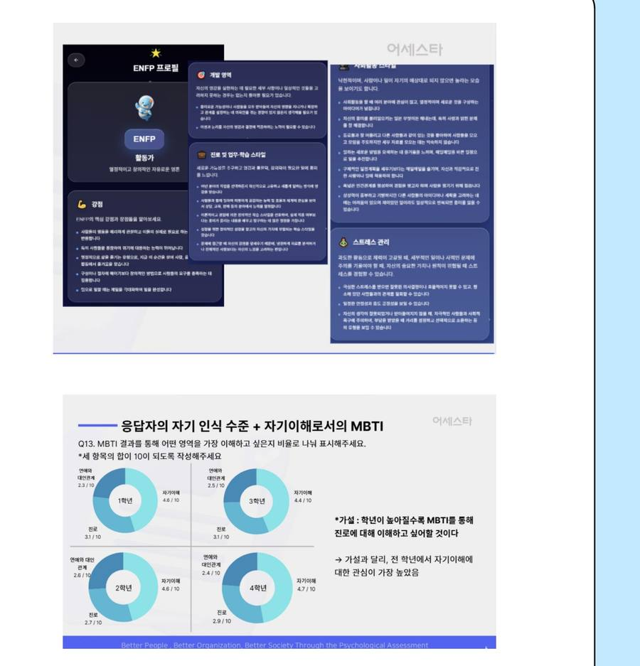

(주)어세스타 인턴2025.07 – 2025.08
MBTI 데이터로 사용자의 마음 읽기
01 · 만족도 조사 UI 개선
- 20대 참여자가 텍스트 중심 응답 문항을 불편해하는 지점을 관찰로 발견
- 이모티콘·예시 문장을 활용한 새 응답 UI 시안 제작
02 · 대학생 MBTI 서베이 분석
- 학습·연애·관계 등 실제 맥락을 반영한 문항 설계
- 데이터 수집·분석 후 전문가 해석 예약 서비스 아이디어 도출
Result. 제안한 UI 시안이 현장에 실제 적용되어 응답률과 만족도가 상승했습니다.
01
